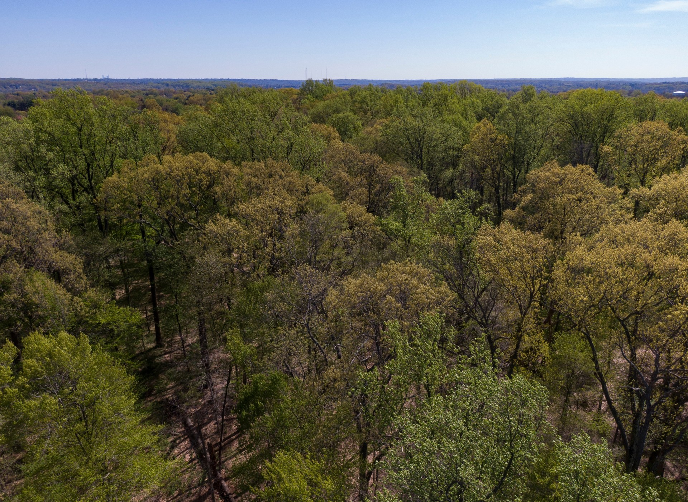

MONIELLE ALENCAR
Ph.D. Student in Biology · Plant Community Ecology
Investigating how functional traits, evolutionary history, and post-disturbance management interact to shape forest recovery and long-term ecosystem resilience.

RESEARCH FOCUS & PILLARS
Member of the Sewall Conservation Ecology Lab, focusing on empirical field surveys, functional traits, and ecological modeling.
Disturbance Ecology & Resilience
Exploring how forest ecosystems respond, reorganize, and recover following natural and anthropogenic disturbances.
Functional Traits & Strategies
Investigating how plant functional traits (wood density, dispersal, resprouting) influence community assembly and ecosystem functioning.
Restoration & Global Change
Examining how active, passive, and mixed management strategies support biodiversity and forest resilience under future climate scenarios.